# Create Vector of Salaries
salaries <- c(40000, 40000, 65000, 90000, 145000, 150000, 550000)
# Calculate the mean using the mean() command
mean(salaries)[1] 154285.7R & Statistics
Ask me anything about R, statistics concepts, or your code.
This lesson covers how to summarize and visualize descriptive statistics for both quantitative and qualitative data in R. Descriptive statistics are the foundation of every analysis — before modeling, testing, or drawing conclusions, you must understand what your data looks like, where it centers, how spread out it is, and whether any unusual patterns or values are present.
We begin with summarizing quantitative data: measuring central tendency (mean, median, mode) and spread (standard deviation, variance, skewness, kurtosis, range, IQR). The choice of which measure to use is not arbitrary — skewed distributions and outliers make the mean unreliable, and the same data can tell very different stories depending on which statistics you report. We work through a salary example to make this concrete, then extend to a real customer dataset.
We then move to visualizing quantitative variables: histograms reveal distribution shape and connect directly to the skewness and kurtosis statistics; density plots provide a smoothed view of the same shape with a mean reference line; and boxplots summarize the five-number summary while flagging potential outliers as individual points. These three charts complement each other — the histogram shows the overall shape, the boxplot isolates the center and tails, and the density plot is best for comparing groups or overlaying a reference.
The second half of the lesson shifts to qualitative (categorical) data: calculating frequencies, proportions, and cumulative distributions using table(), prop.table(), and cumsum(), and visualizing results with bar charts and pie charts using ggplot2. Bar charts are the workhorse for categorical data; pie charts are available but harder to read accurately.
By the end of this lesson, you should be able to choose the appropriate measures of central tendency and spread for any quantitative variable, assess normality using skewness and kurtosis z-scores, identify and investigate outliers visually and numerically, construct frequency tables for categorical variables, and produce publication-quality charts using ggplot2. Work through every code example in your own R script alongside the reading.
skew() and kurtosis() from semTools and interpret z-scores against sample-size thresholds.ggplot2.ggplot2.The goal of this lesson is to teach you how to summarize and visualize descriptive statistics for both quantitative and qualitative data in R. To do this well, we need to understand the difference between quantitative and qualitative data and examine data in context — context tells us how the data was collected and what it is meant to represent. In any analysis, it is critically important to understand your data before modeling or drawing conclusions.
For quantitative data, you should understand how to describe a variable’s center (mean, median, mode), visualize its shape with a histogram, density plot, or boxplot, and quantify its spread (variance, standard deviation, skewness, kurtosis, IQR). For qualitative data, you should know how to calculate frequencies, proportions, and cumulative distributions, and display results clearly using bar charts and pie charts.
AI can generate all of these statistics instantly. What it cannot do is tell you which ones are appropriate for your data, or what the numbers mean in context. A mean wage of $42 means something very different depending on whether the data is symmetric or heavily skewed by a few executives. Choosing the right summary and interpreting it correctly is the analytical judgment this section is building.
The mean() function in R is a versatile tool for calculating the arithmetic average of a numeric vector. The arithmetic mean or simply the mean is a primary measure of central location. It is often referred to as the average.
The sample mean \(\bar{x}\) is the sum of all values divided by the number of observations \(n\).
\[\bar{x} = \frac{\sum_{i=1}^{n} x_{i}}{n}\]
Consider the salaries of employees at a company:
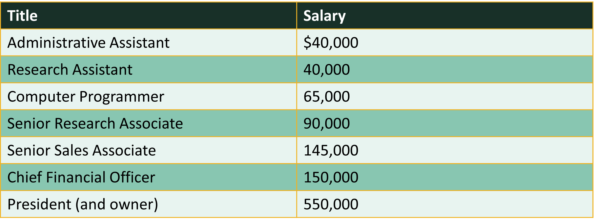
We can use the mean() command to calculate the mean in R.
# Create Vector of Salaries
salaries <- c(40000, 40000, 65000, 90000, 145000, 150000, 550000)
# Calculate the mean using the mean() command
mean(salaries)[1] 154285.7salaries2 <- c(40000, 40000, 65000, 90000, 145000, 150000, 550000, NA,
NA)
# Notice that it does not work without na.rm
mean(salaries2)[1] NA[1] 154285.7While this is a small vector, when working with a large dataset and a function like sort(x = table(salaries), decreasing = TRUE), appending [1:5] is a way to focus on the top results after the frequencies have been computed and sorted. Specifically, table(salaries) calculates the frequency of each unique salary, sort(…, decreasing = TRUE) orders these frequencies from highest to lowest, and [1:5] selects the first five entries in the sorted list. This is useful when the dataset contains many unique values, as it allows you to quickly identify and extract the top 5 most frequent salaries, providing a concise summary without being overwhelmed by the full distribution.
Consider the salary of employees presented earlier. 40,000 appears 2 times and is the mode because that occurs most often.
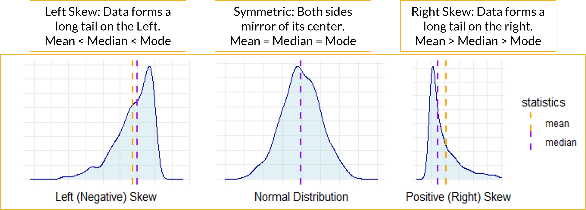
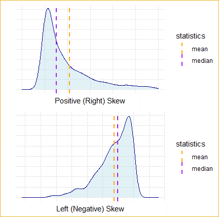
\[\text{Skewness} = \frac{1}{n} \sum_{i=1}^{n} \left( \frac{x_i - \bar{x}}{s} \right)^3\]
where:
Kurtosis is the sharpness of the peak of a frequency-distribution curve or more formally a measure of how many observations are in the tails of a distribution.
The formula for kurtosis is as follows:
\[\text{Kurtosis} = \frac{n(n+1)}{(n-1)(n-2)(n-3)} \sum \left( \frac{(X_i - \bar{X})^4}{s^4} \right) - \frac{3(n-1)^2}{(n-2)(n-3)}\]
Where:
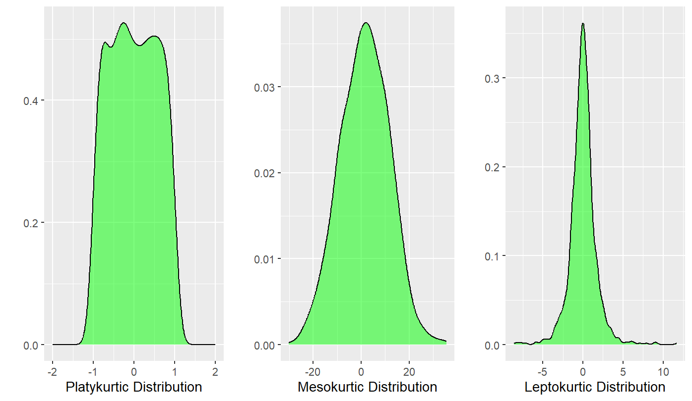
# z-value is 3.0398, which is > 2 indicating leptokurtic Small sample
# size: range is -2 to 2
kurtosis(salaries)Excess Kur (g2) se z p
5.629 1.852 3.040 0.002 # z-value is 2.20528007, which is > 2 indicating leptokurtic Small
# sample size: range is -2 to 2
kurtosis(GrowthFund)Excess Kur (g2) se z p
3.416 1.549 2.205 0.027 Load the customers.csv dataset as customers. It contains 10 variables: CustID, Sex, Race, BirthDate, College, HHSize, Income, Spending, Orders, and Channel.
customers <- read.csv("data/customers.csv")
# Noted sample size at 200 observations or a medium sample size.
# Using threshold –3.29 to 3.29 to assess normality.
# -3.4245446445 is below -3.29 so kurtosis is present Negative
# kurtosis value indicates platykurtic
kurtosis(customers$Spending)Excess Kur (g2) se z p
-1.186 0.346 -3.425 0.001 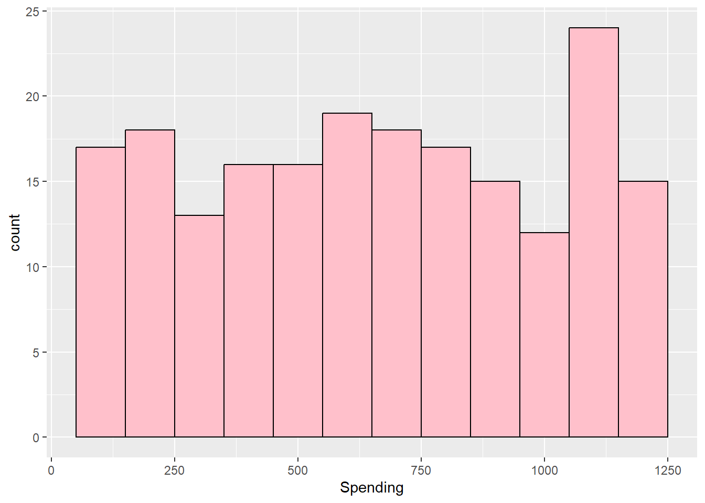
skew (g1) se z p
-0.018 0.173 -0.106 0.916 Excess Kur (g2) se z p
1.031 0.346 2.978 0.003 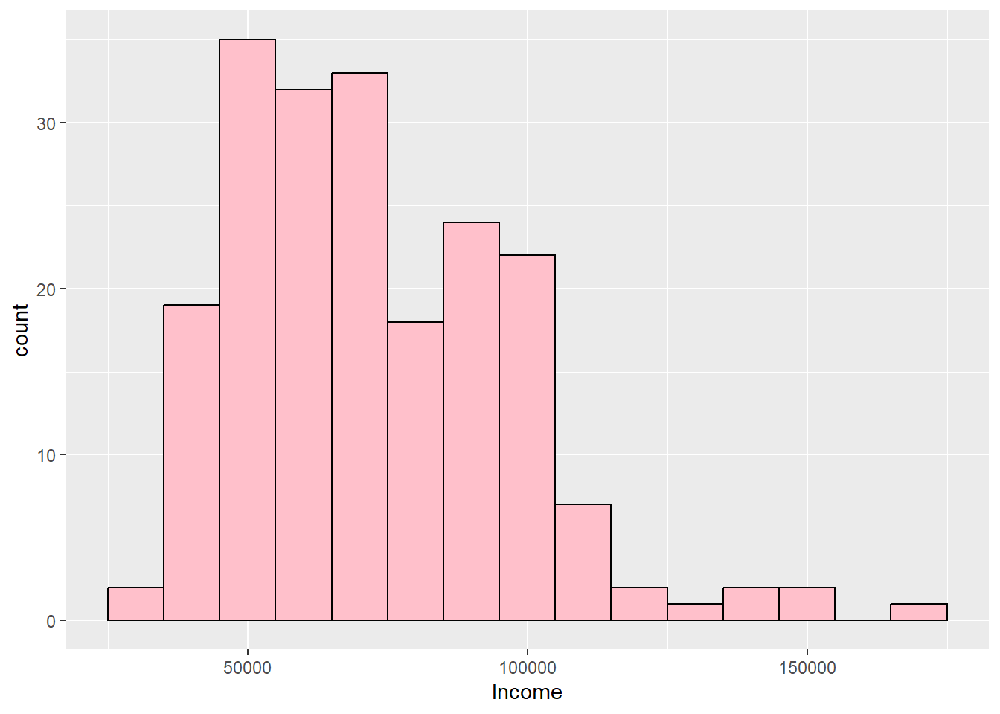
skew (g1) se z p
0.874 0.173 5.047 0.000 # -3.7251961028 is below -3.29 so kurtosis is present Negative
# kurtosis value indicates platykurtic
kurtosis(customers$HHSize)Excess Kur (g2) se z p
-1.290 0.346 -3.725 0.000 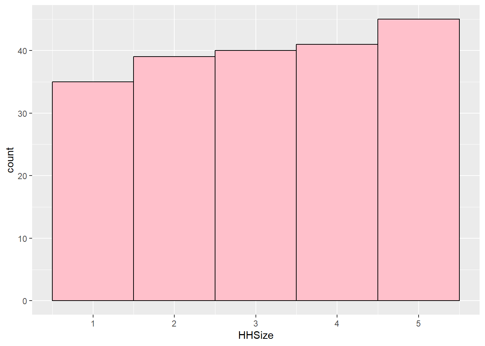
skew (g1) se z p
-0.089 0.173 -0.513 0.608 Excess Kur (g2) se z p
-0.069 0.346 -0.201 0.841 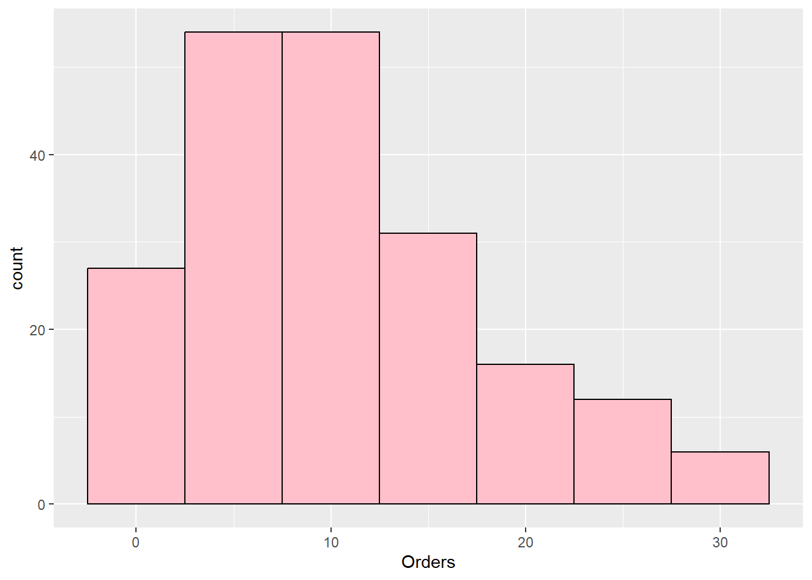
skew (g1) se z p
0.789 0.173 4.553 0.000 Min. 1st Qu. Median Mean 3rd Qu. Max.
50.0 383.8 662.0 659.6 962.2 1250.0 [1] 1200[1] 1200[1] 578.5With central tendency and spread established numerically, the next step is to confirm what those numbers are telling you visually. Histograms, density plots, and boxplots each reveal a different aspect of the distribution — and together they should be consistent with the skewness and kurtosis statistics computed above.
The examples in this section use the descriptives.csv dataset. Load it now so it is available for all charts below.
Graphs for a Single Continuous Variable. A continuous variable refers to a variable that can take any value over a range of values.
A continuous variable needs to be numeric, and could be integer type or numeric type in R. Just like with graphs that include categorical variables, it is beneficial to do any data cleaning and investigation into the variable(s) before you begin.
This may require recoding the variable to coerce it to the appropriate data type and/or renaming it to something meaningful if needed.
It is also beneficial to make sure the numerical variable is indeed supposed to be numerical (as opposed to a factor). For instance, you commonly see numbers listed for categories like the Yes/No coded as a 1/2.
With central tendency, the next step is to visualize the distribution. The three charts below — histogram, density plot, and boxplot — each reveal a different aspect of a numeric variable’s shape, and they connect directly to the skewness and kurtosis statistics above.
A histogram displays the distribution of a continuous (numeric) variable by grouping values into bins and counting how many observations fall in each bin. It is the best first chart to make when you want to understand the shape, center, and spread of a numeric variable.
Layering means building the histogram step by step: ggplot() and aes() set up the canvas and map the variable to the x-axis, geom_histogram() adds the bars, and labs() applies the title and axis labels — each + adds a new layer on top of the last.
Inside aes(), writing x = Spending and Spending are equivalent — ggplot2 assumes the first unnamed argument maps to the x-axis, so both forms produce the same plot. Using x = makes the mapping more explicit and is easier to read, especially once you start adding y =, fill =, and other aesthetics alongside it.
# The simplest way to draw a histogram in base R is hist(). For a
# quick look at CustomerValue:
hist(descriptive_data$CustomerValue, main = "Customer Value Distribution",
xlab = "Customer Value", col = "steelblue")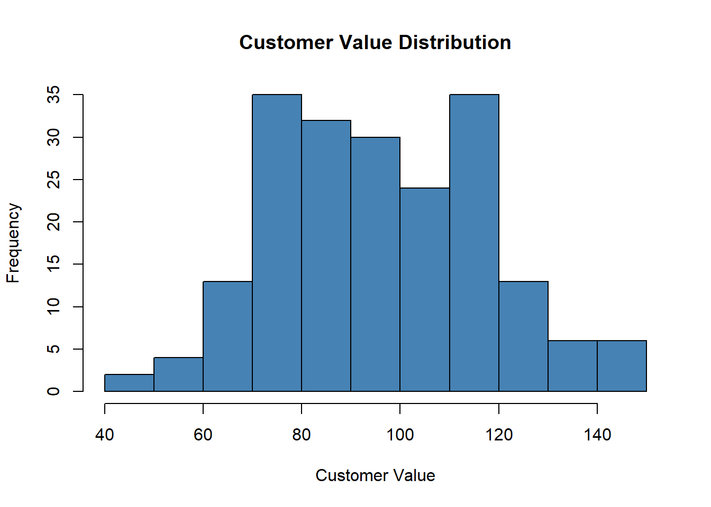
geom_histogram() from ggplot2 gives more control. The key parameter is binwidth — experiment to find a width that shows the shape without too much noise:
binwidth = controls bar width. Too narrow produces noise; too wide hides the shape.ggplot(descriptive_data, aes(x = CustomerValue)) + geom_histogram(binwidth = 15,
fill = "steelblue", color = "white") + labs(title = "Distribution of Customer Value",
x = "Customer Value", y = "Count")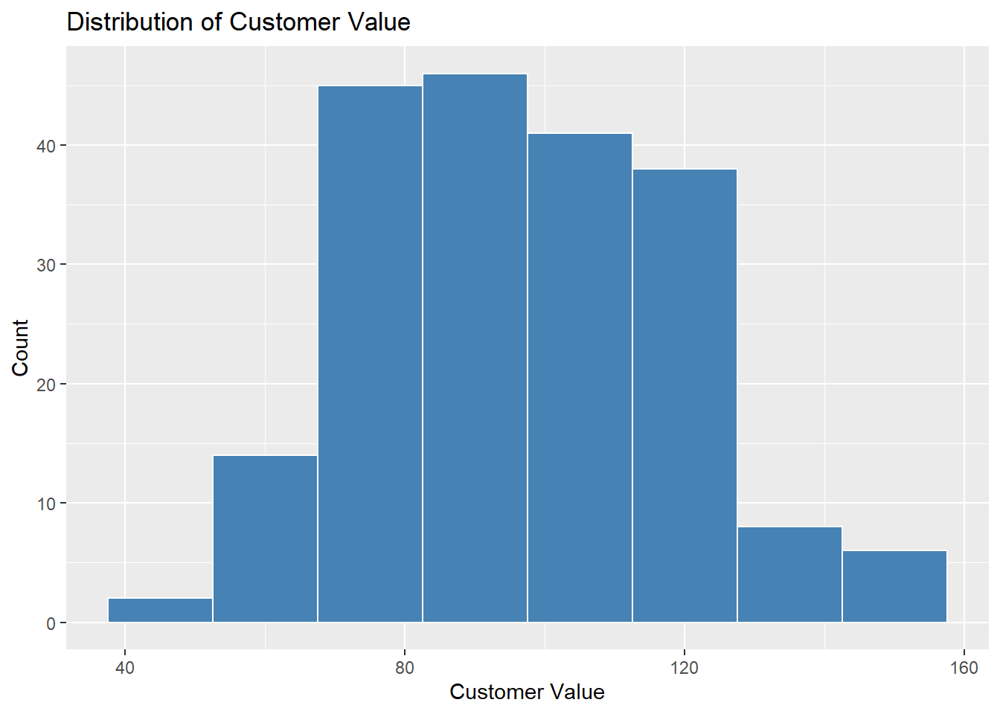
A right-skewed example shows what a problematic distribution looks like visually — compare to DeliveryTime:
A density plot is a smoothed version of a histogram. Instead of bins, it draws a continuous curve that represents the estimated distribution of the variable. It is particularly useful for comparing the shape of distributions or overlaying multiple groups.
Layering means ggplot() and aes() set up the canvas and map the variable to the x-axis, geom_density() draws the smoothed curve, geom_vline() overlays a dashed vertical line at the mean, and labs() adds the title and axis labels.
The area under the curve represents the probability of values falling within a given range. Useful parameters include color = for the line color, fill = to color the area under the curve, and alpha = to set transparency (0 = invisible, 1 = solid).
set.seed(1)
x <- rnorm(1000, mean = 10, sd = 2)
df <- data.frame(x)
ggplot(df, aes(x)) + geom_density(color = "darkblue", fill = "lightblue",
alpha = 0.5) + geom_vline(aes(xintercept = mean(x)), color = "red",
linetype = "dashed", lwd = 1)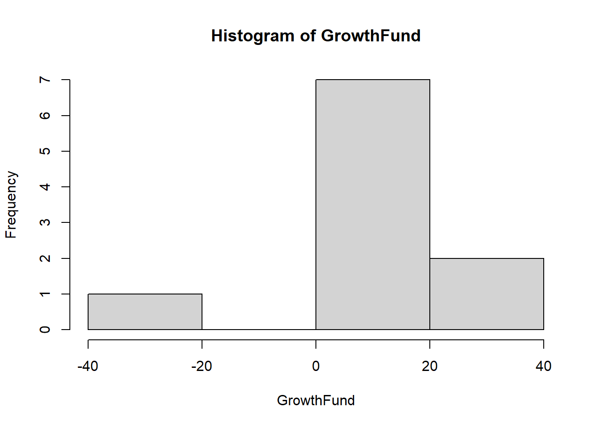
Working with a real dataset uses the same approach — pass the variable directly into aes(). Here we use CustomerValue from the descriptives.csv dataset:
ggplot(descriptive_data, aes(x = CustomerValue)) + geom_density(fill = "lavender",
color = "purple", alpha = 0.6) + geom_vline(aes(xintercept = mean(CustomerValue,
na.rm = TRUE)), color = "red", linetype = "dashed") + labs(title = "Distribution of Customer Value",
x = "Customer Value", y = "Density")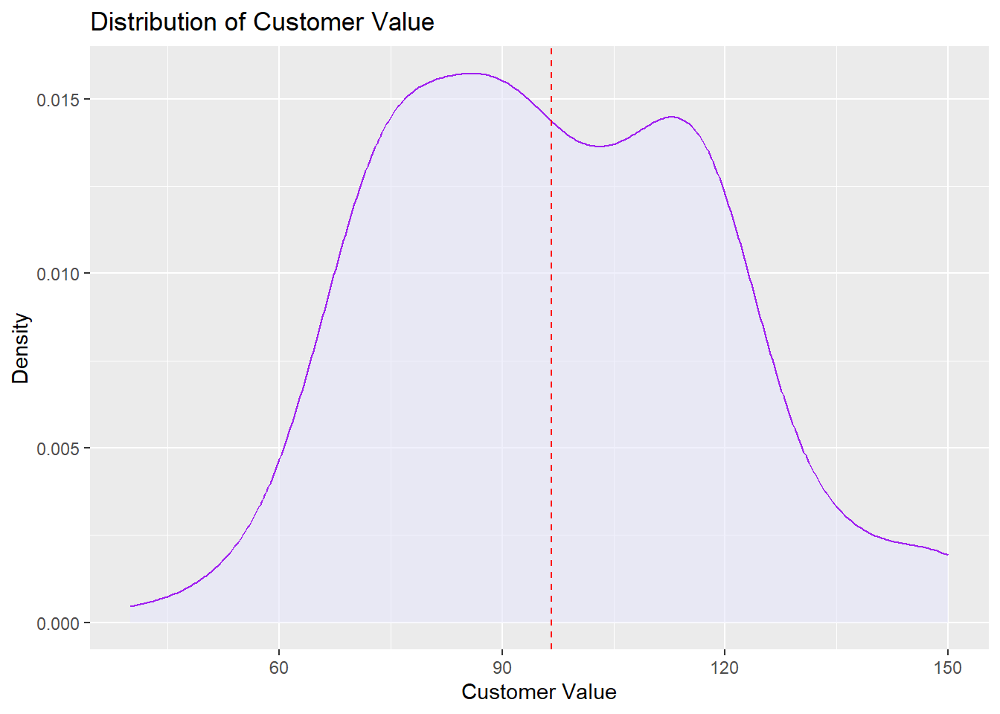
alpha = sets transparency (0 = invisible, 1 = solid). A value around 0.5–0.6 is typical.A boxplot summarizes the distribution of a continuous variable visually using five key values: the minimum, first quartile (Q1), median, third quartile (Q3), and maximum. It also flags potential outliers as individual points beyond the whiskers.
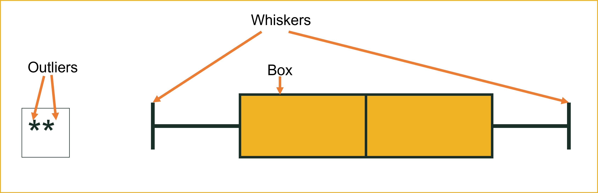
The five values displayed in a boxplot are:
quantile() function returns the five-point summary. The 25th percentile is Q1 and the 75th percentile is Q3. 0% 25% 50% 75% 100%
-38.3200 3.8750 13.0150 16.9425 36.2900 An outlier is an observation that falls unusually far from the rest of the data. What counts as “unusually far” depends on the method being used — there is no single universal definition. In a boxplot, a value is flagged as an outlier if it falls more than 1.5 × IQR below Q1 or above Q3.
Other methods use different thresholds: Z-scores flag values beyond ±2 or ±3 standard deviations from the mean, and some statistical tests apply their own cutoffs entirely. This means the same data point could be considered an outlier by one method but not another, so the choice of method matters.
Regardless of how they are identified, outliers are not automatically errors — they may be legitimate extreme values, data entry mistakes, or observations from a different population — and they should always be investigated before deciding whether to keep or remove them.
DeliveryTime contains several unusually large values — deliveries that took far longer than the typical customer experience. These show up as individual points beyond the right whisker.
ggplot(descriptive_data, aes(x = DeliveryTime)) + geom_boxplot(fill = "lightcoral",
color = "darkred") + labs(title = "Boxplot of Delivery Time (Outliers Present)",
x = "Delivery Time (minutes)") + theme_minimal()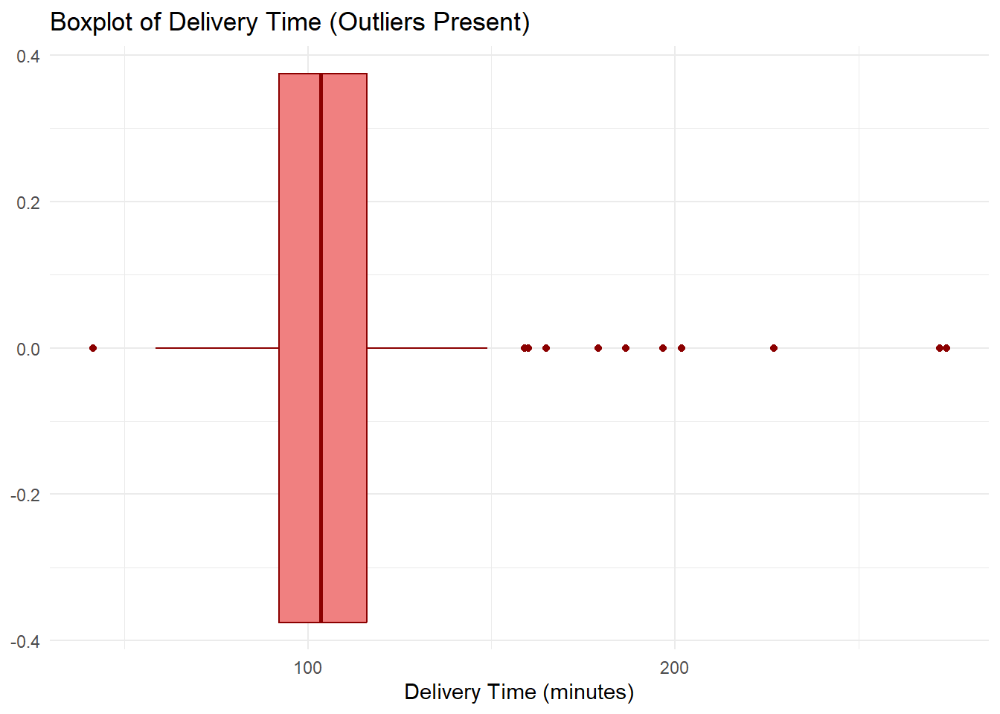
Min. 1st Qu. Median Mean 3rd Qu. Max.
41.42 92.12 103.45 106.87 116.16 273.88 [1] 24.03Notice that the mean will be pulled to the right by those extreme values — this is exactly when the median is the better measure of central tendency. The bulk of deliveries cluster between roughly 75 and 130 minutes, but a handful of extreme delays are distorting the picture.
CustomerValue tells a different story — values are spread relatively evenly with no individual points plotted beyond the whiskers.
ggplot(descriptive_data, aes(x = CustomerValue)) + geom_boxplot(fill = "lightblue",
color = "navy") + labs(title = "Boxplot of Customer Value (No Outliers)",
x = "Customer Value Score") + theme_minimal()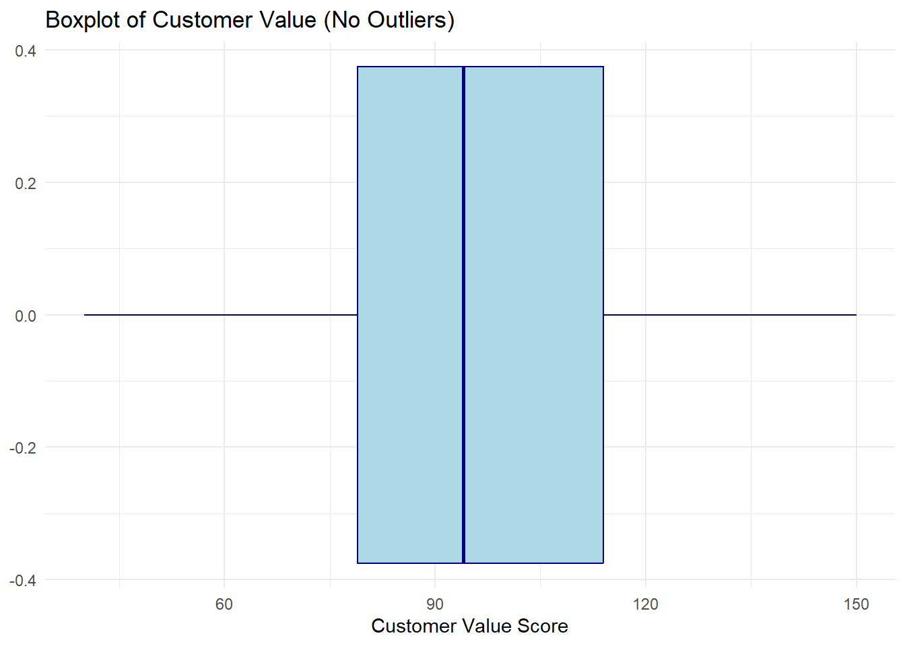
Min. 1st Qu. Median Mean 3rd Qu. Max.
40.00 79.00 94.00 96.62 114.00 150.00 [1] 35Here the median line sits near the center of the box, the whiskers are roughly equal in length, and no individual points appear beyond them. This is the signature of a roughly symmetric distribution with no extreme values — a case where the mean is a reliable summary.
Placing both variables together makes the contrast immediate.
descriptive_long <- descriptive_data %>%
select(DeliveryTime, CustomerValue) %>%
pivot_longer(cols = everything(), names_to = "Variable", values_to = "Value")
ggplot(descriptive_long, aes(x = Value, fill = Variable)) + geom_boxplot(color = "gray30",
alpha = 0.7) + facet_wrap(~Variable, scales = "free_x") + scale_fill_manual(values = c(DeliveryTime = "lightcoral",
CustomerValue = "lightblue")) + labs(title = "With Outliers (DeliveryTime) vs. Without (CustomerValue)",
x = "Value") + theme_minimal() + theme(legend.position = "none")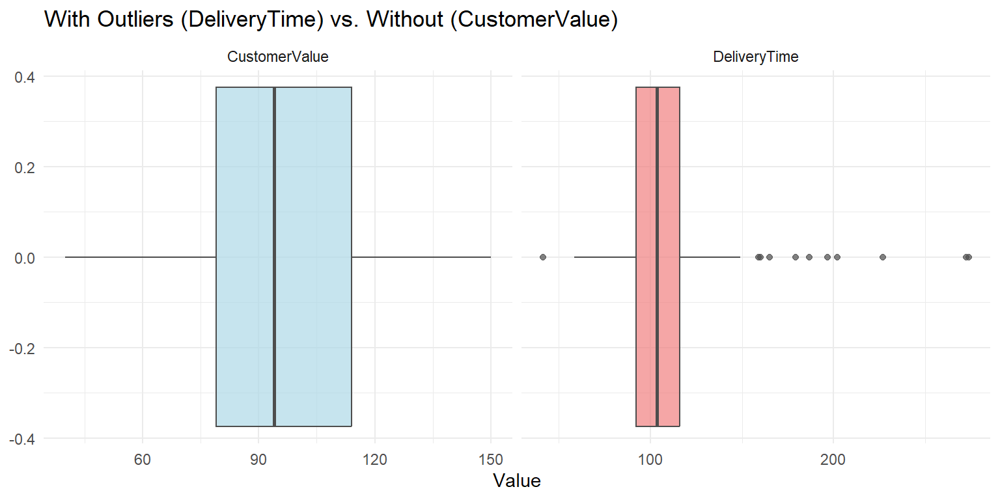
We can confirm what the boxplot shows by computing the bounds directly.
Q1 <- quantile(descriptive_data$DeliveryTime, 0.25)
Q3 <- quantile(descriptive_data$DeliveryTime, 0.75)
IQRvalue <- IQR(descriptive_data$DeliveryTime, na.rm = TRUE)
OutlierValue <- IQRvalue * 1.5
LowerBound <- Q1 - OutlierValue
LowerBound 25%
56.08 75%
152.2 # Will learn about filter, select, arrange in data prep. The key
# operator here is | meaning OR — a delivery time is flagged if it is
# either suspiciously short (below the lower bound) or suspiciously
# long (above the upper bound). Both ends of the distribution are
# checked in a single filter.
outliers <- descriptive_data %>%
filter(DeliveryTime < LowerBound | DeliveryTime > UpperBound) %>%
select(DeliveryTime) %>%
arrange(desc(DeliveryTime))
outliers DeliveryTime
1 273.88
2 272.24
3 226.92
4 201.86
5 196.79
6 186.61
7 179.22
8 164.97
9 160.14
10 158.99
11 41.42The outliers identified here are the same points visible as individual dots in the boxplot above — the numeric method and the visual method agree. Remember: being flagged as an outlier does not mean the value is wrong. Each one should be investigated before deciding whether to keep or remove it.
Quantitative variables have now been fully described and visualized. We now turn to qualitative (categorical) variables. The tools change — frequencies and proportions replace means and standard deviations — but the goal is the same: describe what is typical and how concentrated or spread out the data is across categories.
A B C
5 3 2 # Combine into table
frequency_table <- rbind(frequencies, proportions, cumulfreq, cumulproportions)
# Print the table
frequency_table A B C
frequencies 5.0 3.0 2.0
proportions 0.5 0.3 0.2
cumulfreq 5.0 8.0 10.0
cumulproportions 0.5 0.8 1.0 frequencies proportions cumulfreq cumulproportions
A 5 0.5 5 0.5
B 3 0.3 8 0.8
C 2 0.2 10 1.0 frequencies proportions cumulfreq cumulproportions
A 5 0.5 5 0.5
B 3 0.3 8 0.8
C 2 0.2 10 1.0With frequency tables established, the natural next step is to display categorical distributions visually. Bar charts and pie charts serve the same purpose for categorical variables that histograms do for continuous ones — making the shape of the distribution immediately readable.
With quantitative variables fully described and visualized, we now turn to qualitative (categorical) variables. Rather than histograms and boxplots, categorical variables are best displayed using bar charts and pie charts — each bar or slice represents one category, with height or area proportional to its frequency.
The layering concept introduced in ## Layering in ggplot above applies to all ggplot2 charts, including the bar charts and pie charts in this section. Each + adds another layer — graph type, labels, colors, and themes all stack the same way.
A bar graph depicts the frequency or relative frequency for each category of a qualitative variable as a bar rising vertically from the horizontal axis. It is often used to examine similarities and differences across categories. Before making a bar chart, the variable should be coded as a factor.
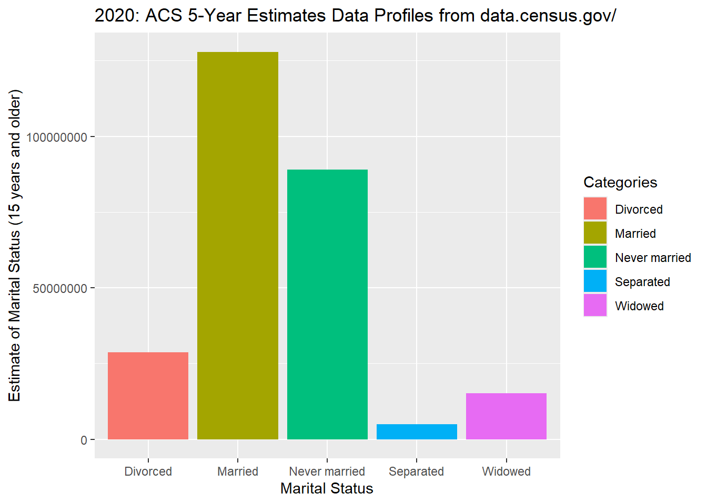
ggplot() command.ggplot() works in layers, so you will routinely see the + symbol to kick off a new layer.aes() command first inside ggplot(). The aes() command describes the variables being used.
ggplot() and aes() — calls the dataset and variables.geom_bar().labs() for labels and titles; themes; geom_text().position="dodge" places bars side by side instead of stacked.GoUp <- 0.54285
GoDown <- 0.03809
RemainStable <- 0.34285
NoOpinion <- 0.07619
data_frame <- data.frame(Category = c("Go Up", "Go Down", "Remain Stable",
"No Opinion"), Percentage = c(GoUp, GoDown, RemainStable, NoOpinion))
MarketShare <- ggplot(data_frame, aes(x = Category, y = Percentage, fill = Category)) +
geom_bar(stat = "identity", show.legend = FALSE) + labs(title = "How do you expect R's market share to change?",
x = "Opinion Category", y = "Percentage (%)") + theme_minimal() + geom_text(aes(label = Percentage),
vjust = -0.5, size = 4) + scale_fill_manual(values = c("red", "blue",
"purple", "green"))
MarketShare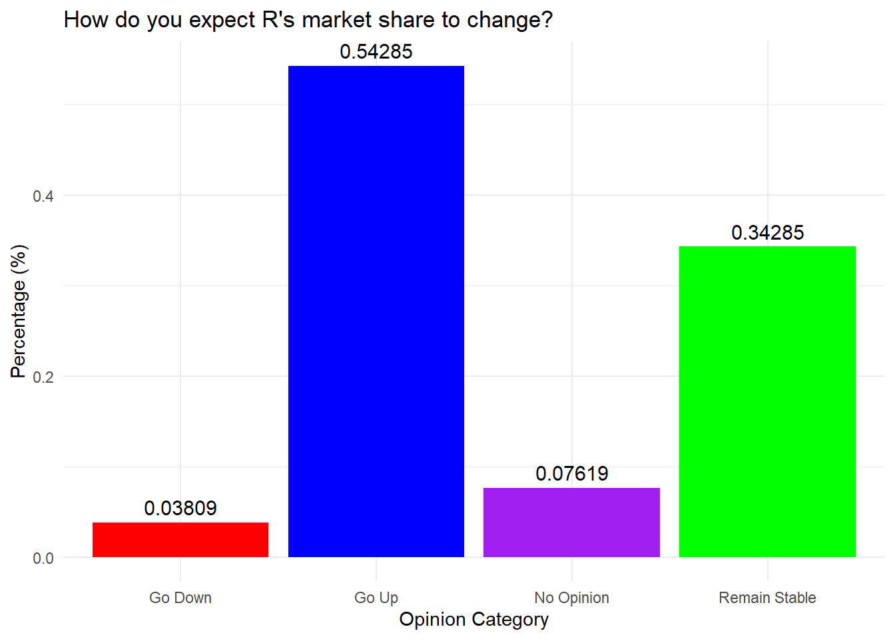
fbi.deaths <- read.csv("data/fbi_deaths.csv", stringsAsFactors = TRUE)
fbi.deaths.small <- fbi.deaths[c(3, 4, 5, 6, 7), ]
fbi.deaths.small <- fbi.deaths.small %>%
rename(Weapon = X)
summary(fbi.deaths.small) Weapon X2012 X2013 X2014
Firearms, type not stated:1 Min. : 116 Min. : 123 Min. : 93
Handguns :1 1st Qu.: 298 1st Qu.: 285 1st Qu.: 258
Other guns :1 Median : 310 Median : 308 Median : 264
Rifles :1 Mean :1779 Mean :1691 Mean :1662
Shotguns :1 3rd Qu.:1769 3rd Qu.:1956 3rd Qu.:2024
Asphyxiation :0 Max. :6404 Max. :5782 Max. :5673
(Other) :0
X2015 X2016
Min. : 177 Min. : 186
1st Qu.: 258 1st Qu.: 262
Median : 272 Median : 374
Mean :1956 Mean :2201
3rd Qu.:2502 3rd Qu.:3077
Max. :6569 Max. :7105
Use the following prompts with a generative AI tool like ChatGPT to explore descriptive statistics further.
Use the descriptive_data dataset loaded earlier in this lesson. It contains the following quantitative variables: ServiceScore, DeliveryTime, ReturnRate, and CustomerValue. Make sure tidyverse and semTools are loaded.
1. Compute the mean and median for both ServiceScore and DeliveryTime. Based on the relationship between those two values for each variable, which one appears skewed and which appears symmetric? Which measure of central tendency is more appropriate for each?
mean(descriptive_data$ServiceScore); median(descriptive_data$ServiceScore)
mean(descriptive_data$DeliveryTime); median(descriptive_data$DeliveryTime)ServiceScore: mean ≈ 50.0, median = 50 — nearly identical, indicating a symmetric distribution. The mean is a reliable summary here.
DeliveryTime: mean is notably higher than the median, indicating right skew — a few very long deliveries are pulling the mean upward. The median is the more appropriate measure of center for DeliveryTime.
2. Run skew() and kurtosis() from semTools on ServiceScore and DeliveryTime. Record the z-values for each and interpret them using the correct threshold for this sample size (n = 200).
skew(descriptive_data$ServiceScore); kurtosis(descriptive_data$ServiceScore)
skew(descriptive_data$DeliveryTime); kurtosis(descriptive_data$DeliveryTime)With n = 200, the relevant threshold is ±3.29.
ServiceScore: both z-values fall well within ±3.29 — approximately symmetric and mesokurtic. Ready to use in analyses that assume normality.
DeliveryTime: the skewness z-value exceeds 3.29 — significant right skew confirmed. The kurtosis z-value is also elevated, indicating heavy tails (leptokurtic). DeliveryTime should be transformed before use in parametric analyses.
3. Calculate the standard deviation, variance, IQR, and range for ServiceScore and ReturnRate. Then explain: if both variables had similar means, what would a much larger standard deviation for one of them tell you?
sd(descriptive_data$ServiceScore); var(descriptive_data$ServiceScore)
IQR(descriptive_data$ServiceScore); diff(range(descriptive_data$ServiceScore))
sd(descriptive_data$ReturnRate); var(descriptive_data$ReturnRate)
IQR(descriptive_data$ReturnRate); diff(range(descriptive_data$ReturnRate))ServiceScore: SD ≈ 4.88, IQR ≈ 8, range 40–59. Scores are tightly clustered around the mean — very consistent.
ReturnRate: SD ≈ 1.00, IQR ≈ 1.33, range −3.24 to 2.50. The range is stretched by two low outliers, but the bulk of values sit in a tight band near zero.
If both variables had similar means, a much larger SD for one would indicate that individual values are spread further from the center — more variability and less predictability in that variable.
4. Compute the IQR-based outlier bounds for DeliveryTime and list any flagged values. Does finding an outlier mean that value is wrong?
Q1 <- quantile(descriptive_data$DeliveryTime, 0.25)
Q3 <- quantile(descriptive_data$DeliveryTime, 0.75)
IQR_val <- IQR(descriptive_data$DeliveryTime, na.rm = TRUE)
lower_bound <- Q1 - 1.5 * IQR_val
upper_bound <- Q3 + 1.5 * IQR_val
descriptive_data[descriptive_data$DeliveryTime < lower_bound |
descriptive_data$DeliveryTime > upper_bound, "DeliveryTime"]Values above the upper bound are flagged as outliers — these are deliveries that took substantially longer than the typical range. Being flagged does not mean a value is wrong. Each outlier should be investigated: it could be a legitimate extreme case (an unusually complex delivery), a data entry error, or a record from a different population entirely. That judgment requires context, not just a formula.
5. Create a histogram of ServiceScore (binwidth = 5) and a separate histogram of DeliveryTime (binwidth = 25), each with an informative title and a non-black fill. Compare the shapes — does each histogram match what the skewness statistics showed?
ggplot(descriptive_data, aes(x = ServiceScore)) +
geom_histogram(binwidth = 5, fill = "mediumseagreen", color = "white") +
labs(title = "Distribution of Service Score", x = "Service Score", y = "Count")
ggplot(descriptive_data, aes(x = DeliveryTime)) +
geom_histogram(binwidth = 25, fill = "tomato", color = "white") +
labs(title = "Distribution of Delivery Time", x = "Delivery Time", y = "Count")ServiceScore should appear roughly symmetric with no tail — consistent with the near-zero skewness z-score. DeliveryTime should show a clear right tail with most values clustered at lower times and a few stretching far to the right — matching the significant positive skewness z-value. This is the intended workflow: compute the statistics first, then confirm visually.
6. Create boxplots for ServiceScore and DeliveryTime. For each, identify whether outliers appear as individual points. Then explain what the relative lengths of the whiskers tell you about symmetry.
ggplot(descriptive_data, aes(x = DeliveryTime)) +
geom_boxplot(fill = "tomato", color = "darkred") +
labs(title = "Boxplot of Delivery Time", x = "Delivery Time")
ggplot(descriptive_data, aes(x = ServiceScore)) +
geom_boxplot(fill = "mediumseagreen", color = "darkgreen") +
labs(title = "Boxplot of Service Score", x = "Service Score")ServiceScore: no outlier points visible, whiskers roughly equal in length — a symmetric distribution. DeliveryTime: individual points plotted beyond the right whisker confirm the outliers identified numerically in Question 4. The right whisker is much longer than the left, visually showing the right skew.
Unequal whisker lengths are a fast visual signal: if the right whisker is longer, the upper values are more spread out — right skew. If the left is longer, the data is left-skewed. Symmetric distributions have roughly equal whiskers.
7. Create a density plot of CustomerValue with a dashed vertical line at the mean. Based on where the mean line falls relative to the peak, is the distribution symmetric or skewed?
ggplot(descriptive_data, aes(x = CustomerValue)) +
geom_density(fill = "steelblue", color = "navy", alpha = 0.5) +
geom_vline(aes(xintercept = mean(CustomerValue, na.rm = TRUE)),
color = "red", linetype = "dashed") +
labs(title = "Density of Customer Value", x = "Customer Value", y = "Density")The mean line should sit close to the peak of the distribution. If the mean falls slightly to the right of the peak, a mild right skew is present — consistent with the mean (≈96.6) being slightly higher than the median (≈94). A symmetric distribution would show the mean sitting exactly at the peak.
Use the descriptive_data dataset. The two qualitative variables are EngagementLevel (high, medium, low) and LoyalCustomer (yes, no).
1. Build a complete frequency summary for EngagementLevel: frequency, relative frequency, cumulative frequency, and cumulative proportion. Combine them into a single transposed data frame, then fill in the table below from your output.
frequencies <- table(descriptive_data$EngagementLevel)
proportions <- prop.table(frequencies)
cumulfreq <- cumsum(frequencies)
cumulproportions <- cumsum(prop.table(frequencies))
frequency_table <- rbind(frequencies, proportions, cumulfreq, cumulproportions)
TransposedData <- as.data.frame(t(frequency_table))
TransposedData| Category | Frequency | Proportion | Cumul. Freq | Cumul. Prop |
|---|---|---|---|---|
| high | 53 | 0.265 | 53 | 0.265 |
| low | 67 | 0.335 | 120 | 0.600 |
| medium | 80 | 0.400 | 200 | 1.000 |
Medium engagement is most common at 40.0% of customers.
2. Run the same frequency analysis on LoyalCustomer. What percentage of customers are loyal? Which rbind() row tells you this most directly?
frequencies <- table(descriptive_data$LoyalCustomer)
proportions <- prop.table(frequencies)
cumulfreq <- cumsum(frequencies)
cumulproportions <- cumsum(prop.table(frequencies))
frequency_table <- rbind(frequencies, proportions, cumulfreq, cumulproportions)
as.data.frame(t(frequency_table))43.5% of customers are loyal (yes) and 56.5% are not (no). The proportions row gives this most directly — it divides each frequency by the total, producing the relative share of each category without any extra calculation.
3. Create a bar chart of EngagementLevel showing counts, then a second version showing proportions on the y-axis. What does switching from counts to proportions change about what the chart communicates?
# Counts
ggplot(descriptive_data, aes(x = EngagementLevel)) +
geom_bar(fill = "steelblue", color = "white") +
labs(title = "Customer Count by Engagement Level",
x = "Engagement Level", y = "Count")
# Proportions
ggplot(descriptive_data, aes(x = EngagementLevel, y = after_stat(prop), group = 1)) +
geom_bar(fill = "steelblue", color = "white") +
scale_y_continuous(labels = scales::percent) +
labs(title = "Proportion of Customers by Engagement Level",
x = "Engagement Level", y = "Proportion")The shape is identical — bars have the same relative heights. The difference is interpretability: counts tell you how many customers are in each group (useful when the total sample size matters), while proportions tell you the share of the whole (easier to compare across datasets of different sizes). Use proportions when you want to communicate relative importance rather than raw volume.
4. Create a grouped bar chart with EngagementLevel on the x-axis and bars colored by LoyalCustomer. Use position = "dodge" and add a scale_fill_manual() with two colors of your choice. What pattern do you see in the loyalty split across engagement levels?
ggplot(descriptive_data, aes(x = EngagementLevel, fill = LoyalCustomer)) +
geom_bar(position = "dodge", color = "white") +
labs(title = "Engagement Level by Loyalty Status",
x = "Engagement Level", y = "Count", fill = "Loyal Customer") +
scale_fill_manual(values = c("no" = "tomato", "yes" = "steelblue"))Non-loyal customers outnumber loyal customers within every engagement level: high (27 no vs. 26 yes), low (39 no vs. 28 yes), medium (47 no vs. 33 yes). Loyal customers are a consistent minority across all three groups — engagement level alone does not appear to strongly separate loyal from non-loyal customers.
This lesson covered descriptive statistics for both quantitative and qualitative data in R:
| Topic | Key concepts |
|---|---|
| Central tendency — mean | mean(), weighted.mean(); best when distribution is symmetric; sensitive to outliers |
| Central tendency — median | median(); preferred when data is skewed or outliers are present; not affected by extremes |
| Central tendency — mode | sort(table(), decreasing=TRUE); most useful for categorical data or identifying the most common value |
| Skewness | skew() from semTools; z-score thresholds: ±2 (n < 50), ±3.29 (n 50–300), ±7 (n > 300) |
| Kurtosis | kurtosis() from semTools; same z-score thresholds; leptokurtic (positive) vs. platykurtic (negative) |
| Variance and standard deviation | var(), sd(); paired with mean; measure average deviation from center |
| Range and IQR | diff(range()), IQR(), quantile(); paired with median; IQR is the middle 50% of data |
| Outlier detection | Lower bound = Q1 − 1.5 × IQR; upper bound = Q3 + 1.5 × IQR; flagged ≠ wrong |
| Histograms | geom_histogram(binwidth=); reveals shape, center, and spread; connect visually to skewness |
| Density plots | geom_density(); smoothed histogram; use geom_vline() to overlay the mean |
| Boxplots | geom_boxplot(); five-number summary (min, Q1, median, Q3, max); outliers plotted individually |
| Frequency tables | table(), prop.table(), cumsum(); combined with rbind(), t(), as.data.frame() |
| Bar charts | geom_bar() for counts; after_stat(prop) for proportions; position="dodge" for grouped bars |
| Pie charts | coord_polar("y"); available but bar charts are preferred for accurate comparison |
What comes next: The Data Preparation lesson introduces the tools needed to clean and reshape data before analysis — filtering rows, selecting columns, recoding variables, handling missing values, and reshaping between wide and long formats using dplyr. The summary statistics and charts in this lesson are only meaningful on clean data, so data preparation is the essential next step.